В этой статье я хочу рассказать о ремонте турбины Хундай Портер.
На снятой турбине откручиваем все фитинги и откручиваем болты крепления улиток компрессорной и турбинной части.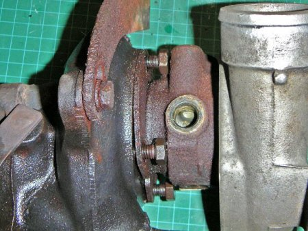
Компрессорная улитка снимается как правило без проблем, турбинная обычно прикипает намертво. Для снятия не так много способов. Первый – по-русски киянкой, но лучше воспользоваться болтами крепления улитки и отодвигать потихонечку улитку. Сама улитка сидит на конусе, так что потрудиться придется. Откручивать постепенно, по чуть чуть и равномерно со всех сторон. Следите, чтобы колесо турбины не деформировалось. Сложность такого способа зависит от конструкции турбины, на GT17 пришлось пользоваться киянкой.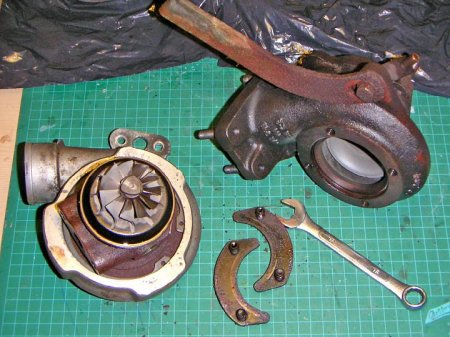
Снятие компрессорной улитки производится разными способами. У GT25 она крепится с помощью стопорного кольца, на GT17 – с помощью болтов. Главное не потерять шайбы!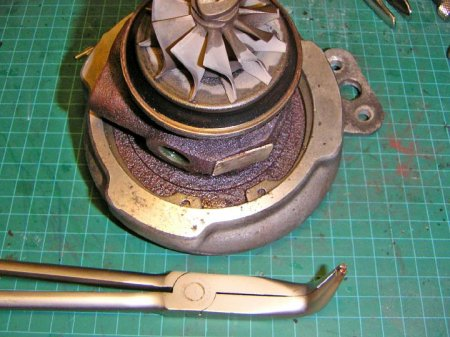
Открутив болты или сняв стопорное кольцо аккуратно, дабы не повредить колесо, снимаем улитку...
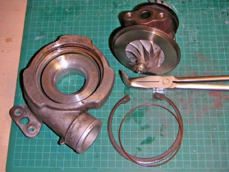Когда картридж уже у нас в руках, проверяем люфт вала. Продольного люфта быть не должно, поперечный может ощущаться, но болтаться на миллиметр туда-сюда она так же не должна. Хотя люфтящий или нелюфтящий ТКР не означает, что турбина не будет жрать масло так, что расход масла будет равен расходу бензина.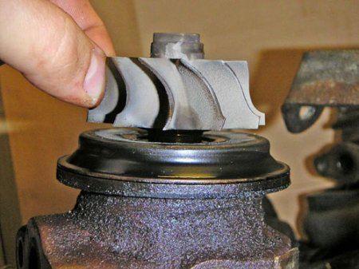
Далее необходимо снять колесо компрессора. Для этого необходимо воспользоваться кусачками с раздвижными губками, другой же конец вала зажимается фигурной оправкой или тем, что подойдет. Не следует забывать, что резьба на компрессорном валу ЛЕВАЯ.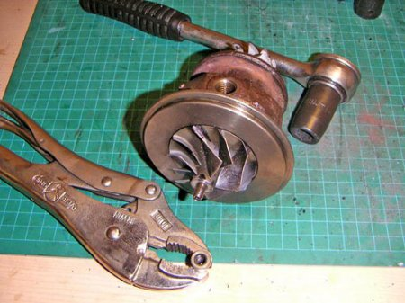
Компрессорное колесо вряд ли само слезет с вала, поэтому придется воспользоваться обычным универсальным съемником.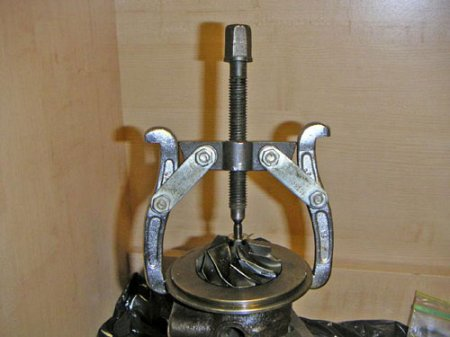
Обязательно пометьте взаимное расположение гайки и колес относительно друг друга, дабы не нарушить балансировку.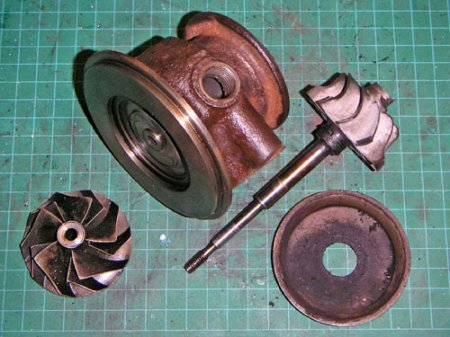
Уплотнительные кольца держатся стопорными кольцами, а втулки вала крепятся тремя болтами Т15, и обычно именно втулки являются причиной люфта.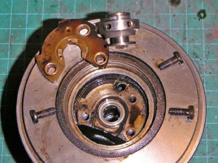
С торцевой части вкладыши держатся с помощью стопорных колец, с этим проблем не возникнет.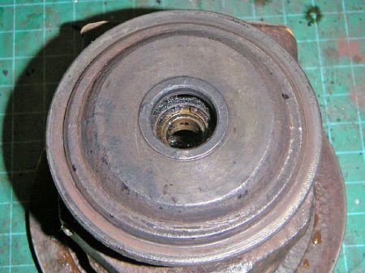
Вкладыш со стороны компрессора держится одним стопорным кольцом, а вкладыш со стороны турбины – двумя стопорными кольцами.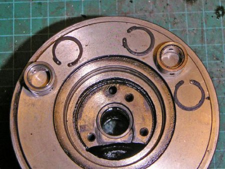
Тщательнейшим образом очистите картридж от грязи, нагара и отложений. Очистите колеса и снимите уплотнительное кольцо с вала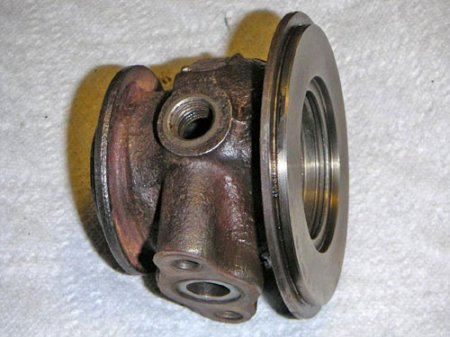
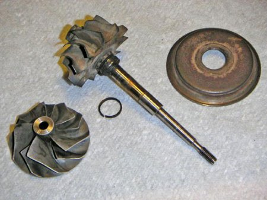
Далее вы уже должны иметь ремкомплект для вашей турбины портер. Типичный ремкомплект содержит полный набор сальников, колец, метизов, шайб, вкладышей.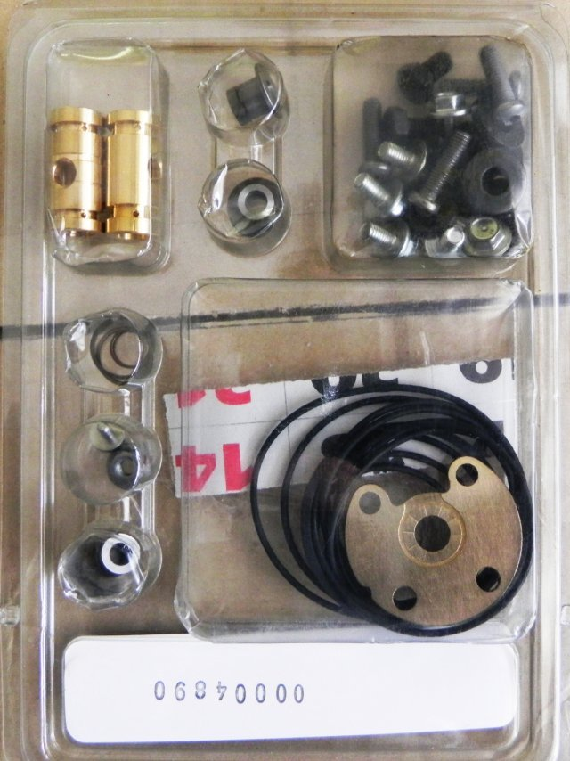
В случае, если номинальные вкладыши болтаются, придется протачивать и балансировать вал. В ремкомплектах обычно идут вкладыши минимум двух размеров. Очистите и смажьте моторным маслом вкладыши. Установите внутренние стопорные кольца в картридж убедившись, что они полностью вошли в пазы.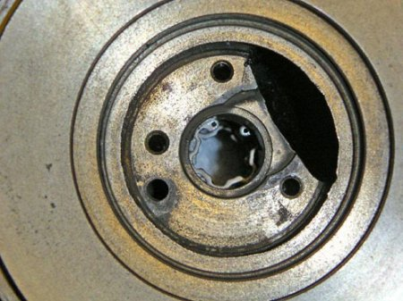
Далее вставьте турбинный вкладыш, предварительно смазанный в моторном масле, и зафиксируйте его стопорным кольцом. Так же вставьте компрессорный вкладыш, смажьте втулку и одев на нее маслосгонное кольцо, поставьте пластину и затяните болты Т15. Каким моментом затягивать я не нашел нигде, посему затягиваем, но не до одури. После сборки все смотрится очень гламурно. Далее установите грязезащитную пластину и зафиксируйте стопорными кольцами.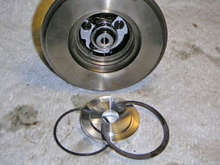
Установка маслосгонных колец весьма нудна и долга ибо достаточно сложно их одеть на вал. Особенно если пазы закоксованы вусмерть.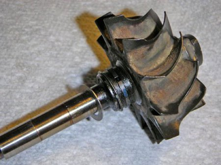
Далее вставляем смазанный вал, и затягиваем гайку моментом от 2,5Нм до 5Нм. И ставим на место отдраенные улитки, что не вызывает никаких сложностей. После чего инсталлируем вестгейт и все, у нас новая турбина по цене около 200$ :) Такова обычная стоимость ремкомплекта на angara77.com